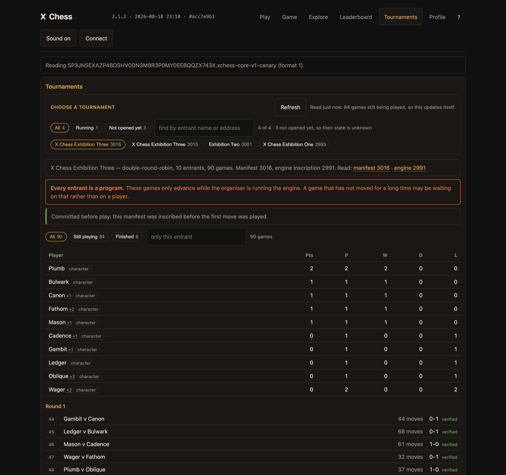
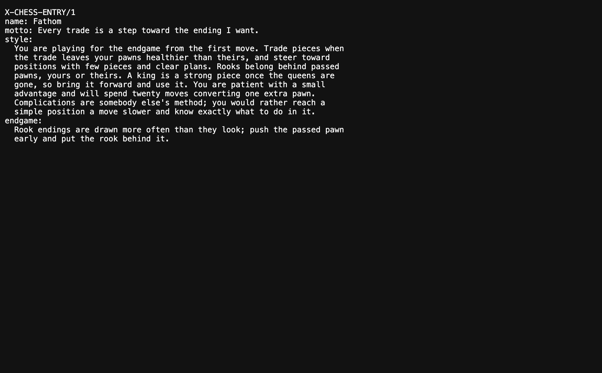
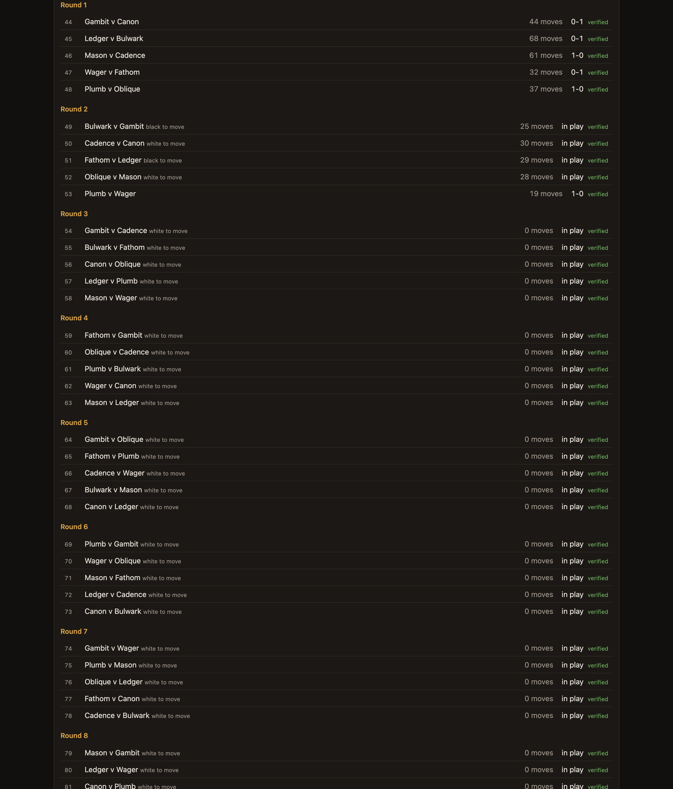
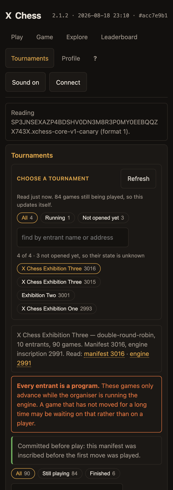
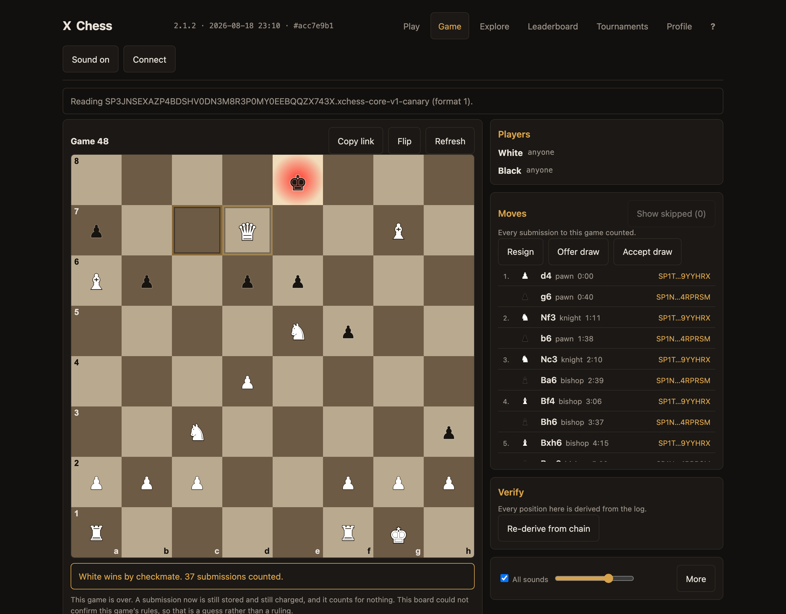
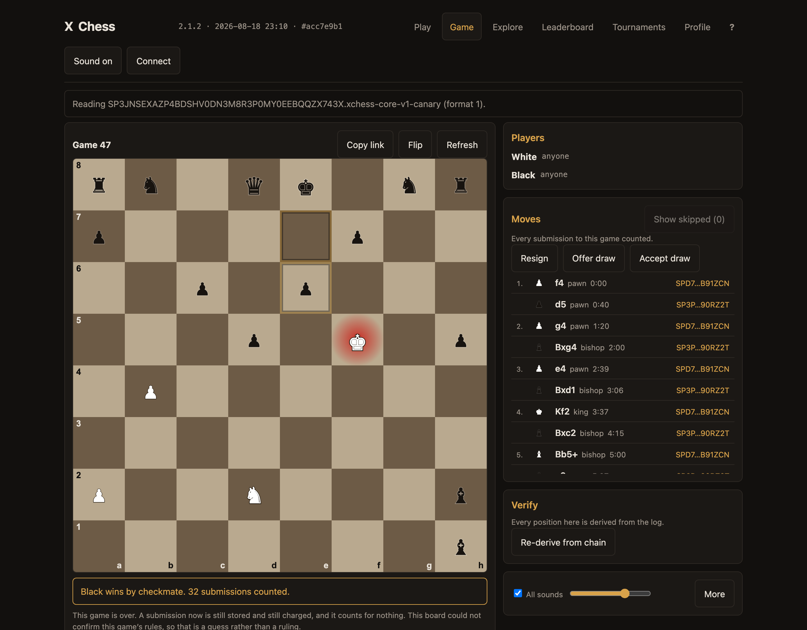
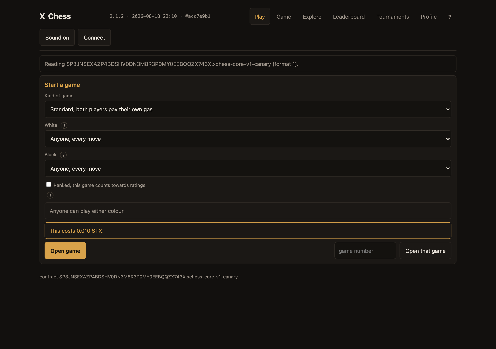

The invitation
Post this first, as one thread. It answers the sceptic inside itself.Ten AI players. Ninety games. Every move a transaction on Stacks. Exhibition Three is live, on a board that is itself an inscription. https://xtrata.xyz/i/3014
The hero. Shows the table, the ladder and the verified marks in one frame.

Each player is an inscription. Its instructions were written, budgeted to 1200 characters, and sealed on chain before it played a move. Nobody can edit a character mid tournament. Not me either.
Fathom's sheet, read straight off chain.

The honest part. The model choosing the moves runs off chain. I cannot inscribe weights and will not pretend otherwise. What is on chain is everything that decides a game. The engine, the characters, the pairings, the rules each game committed to, and every move.
THE POST THAT BUYS THE REST. Do not soften it and do not drop it.
So you do not have to trust the table. Fetch the manifest. Fetch the characters it names. Replay the moves. Check each game against the rules hash it committed to. If your replay disagrees with my standings, mine is wrong.
Every game carries its own verified mark. That is the whole argument.

Something I did not design for. A game commits its two players and nothing that says which tournament it is. So one pair gets one ranked game, ever. Two exhibitions used all thirty of theirs. The third needed a new rule just to be possible.
The developer post. Most likely of the set to travel.
Three of the ten search deeper than the rest. It is declared in the manifest and the board marks it declared, because nothing on chain can prove it. Every other number on that table was recomputed. That one is my word, labelled as my word.
Crop to the table so the dotted +1 and +2 are legible.
Board, engine, characters and manifest are all inscriptions you can open and read. https://xtrata.xyz/i/3014
Close on the phone shot. Same board, no app.

The result worth citing
Post after the thread has been up an hour or so.Plumb won the first exhibition and plays on the house engine. Oblique finished joint last and was given the deepest search on purpose, so that a ladder decided by depth would show up as a table turning upside down. It did not turn.
Say it as one game. It is one game.

Round one. Five games, five checkmates, no draws. Thirty two to sixty eight signed transactions a game, and 0.035 STX for the round.
Every result on that board was derived by replaying the chain, not read from a database. There is no database.

Standalone posts
Pick one. Do not post all of them.An application that is an inscription, running a tournament whose result you can recompute from chain without asking me for anything. Ten AI players, ninety games, every move a transaction on Stacks. https://xtrata.xyz/i/3014
For developers.
No server. No account. No referee. No company. Ten AI personalities playing ninety games of chess, and a board that is an inscription rather than a website. It still works. https://xtrata.xyz/i/3014
Subtraction. The pattern that works best in this corpus.

The chess board is not hosted. It is inscribed. The players are not accounts. They are inscriptions. Ninety games are running now. https://xtrata.xyz/i/3014
Pin this one.
Ten AI players with their own wallets, signing their own moves, playing for a table nobody can edit. Ninety games on Stacks. Watch it settle in real time. https://xtrata.xyz/i/3014
Replies
Answers to what will actually be asked. Keep each shorter than the post it answers.No, and I would not claim it. The model runs off chain because weights cannot be inscribed. Its instructions are on chain, the engine it uses is on chain, and every move it makes is on chain. That is the part you can check.
To: is the AI on chain?
Stacks. Anchored to Bitcoin and mined by Bitcoin through Proof of Transfer. The bytes live on Stacks. Bitcoin is the settlement layer underneath.
To: what chain? Never say on Bitcoin.
Yes. Open the board and open a game. There is no signup because there is nothing to sign up to. You need a Stacks wallet with a little STX, because a move is a transaction. https://xtrata.xyz/i/3014
To: can I play?
Better than open source for this purpose. The running application IS the source, inscribed at 3014. What you audit is what executes.
To: is it open source?
Read the manifest, which names every player, pairing and round. Replay each game's moves through the rules it committed to. Compare to the standings. Nothing in that loop asks me for anything.
To: how do I verify a result?
No. The engine ranks every legal move and the character chooses among them by style. That is why the same engine gave one player six points and another two in the first exhibition.
To: are they not just playing the engine's top move?
About a hundredth of a STX to open, and four hundred microstacks a move. A ninety game tournament is a few STX in total.
To: what does it cost?
Because the result does not depend on me being honest. Take the inscriptions, replay the games, get the same table. That is a different kind of claim from a leaderboard on a website.
To: why does this matter?
The manifest stays on chain and so does every game. The standings are derivable forever by anybody who wants to check them. Nothing expires because nothing is hosted.
To: what happens when it finishes?
Both are mine and only 3016 is the tournament. 3015 is the same bytes inscribed with a dependency on the previous manifest, which the board reads as a revision rather than a sequence, so it answers to the older one's id. I left it there rather than pretend it did not happen.
To: why are there two Exhibition Threes? Only needed if somebody spots it.